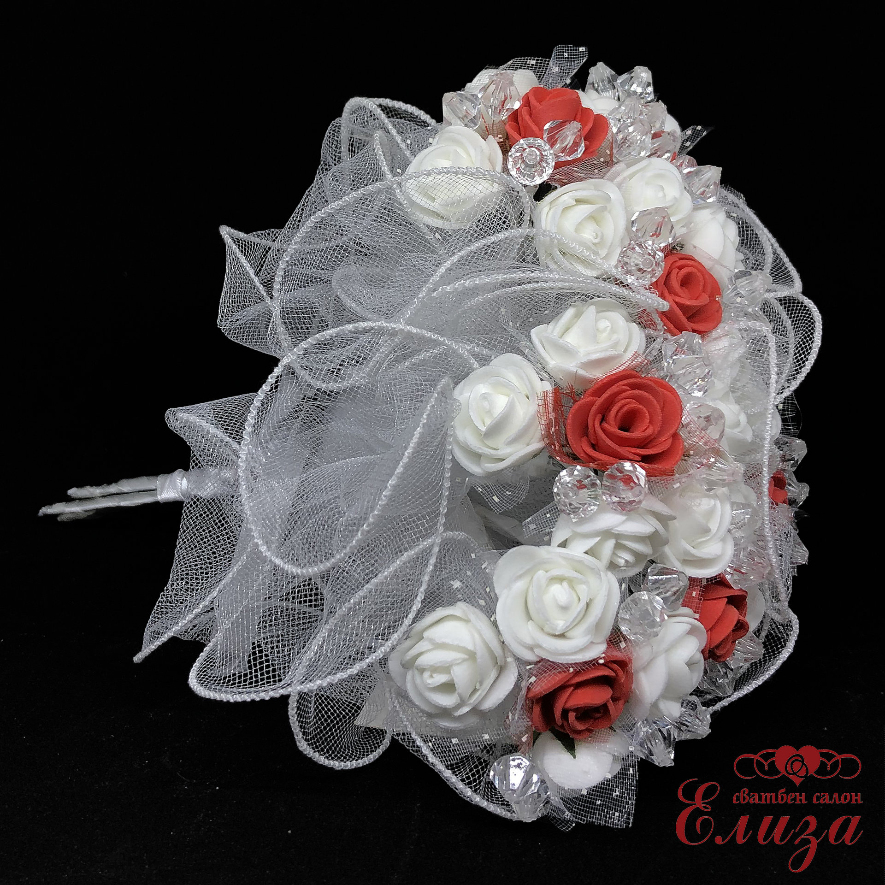

🌺 Сватбен букет за хвърляне от малки рози в червено
ОПИСАНИЕ
Сватбен букет за хвърляне, изработен от декоративни розички, ситни кристали и тюл.
Букетът представлява 3 отделни букетчета, които са завързани едно за друго със сатенена лента.
Когато моментът за хвърляне настъпи, булката може да хвърли целия букет или да изненада дамите като хвърли 3 отледни букета.
Така булката запазва собствения си букет за себе си, но и да подарява страхотен спомен от сватбата си на момичето или момичетата, успели да се пребори и улови букета за хвърляне.
Приблизителен размер: диаметър - 17см.
